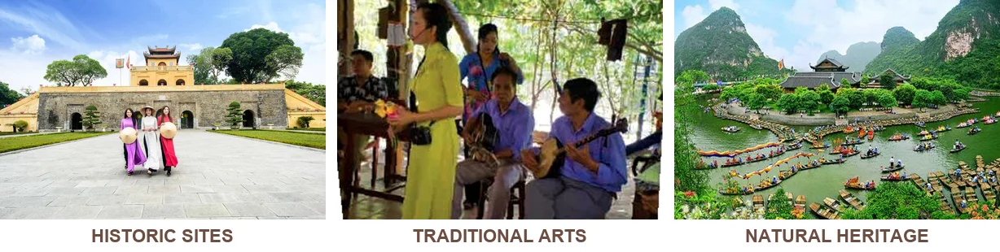
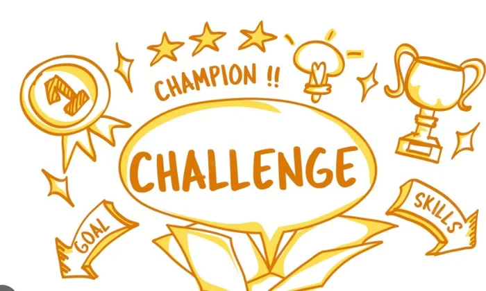
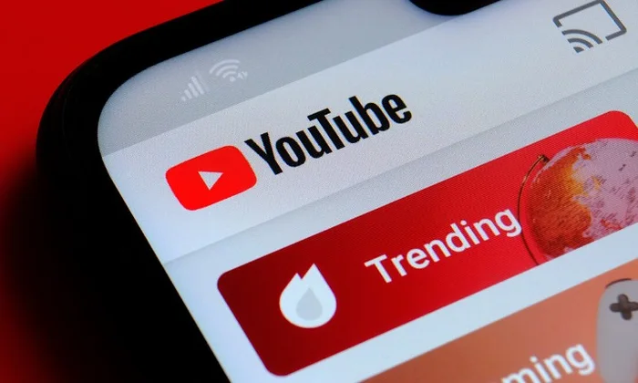
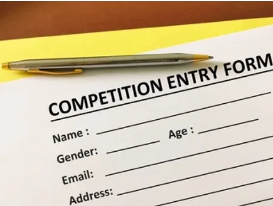
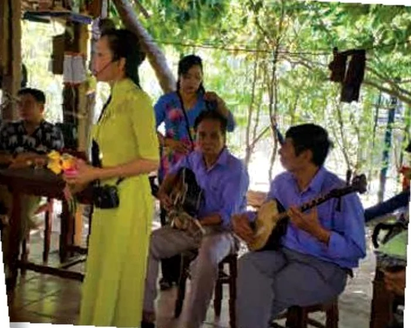
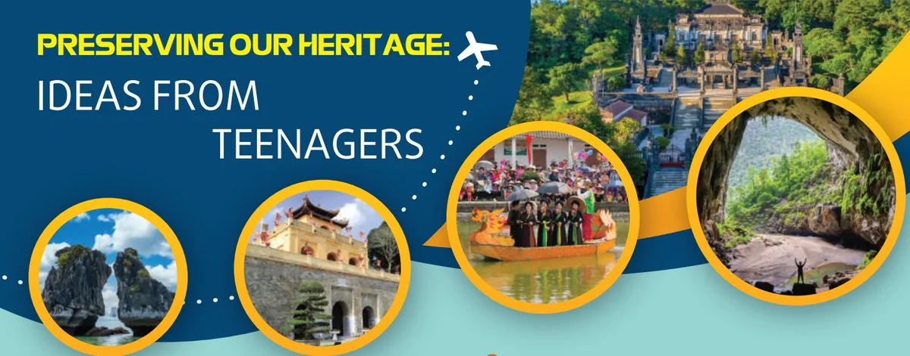

Ideas for preserving heritage
Lesson 3 — Reading
6Five stops in 45 minutes
- 💡
Brainstorm
Warm-up
5 min - 📚
Before reading
Discuss + new words
9 min - 📖
The article
Tasks 2–4
20 min - 💬
Discuss
The best idea
8 min - ✅
Wrap-up
Exit ticket
3 min
Warm-up
What can we do to protect our heritage?
5 minutesWhat would Viet Nam lose if its heritage disappeared?

What can we do to protect them? nature walks · visits to museums · heritage clubs · drawing and essay competitions · documenting local festivals
Before reading
Discuss + new words
9 minutesWhy is it important to protect our heritage?
- 🪪
Identity
It connects us with our history.
- 🎓
Learning
It teaches young people about culture.
- 🧳
Tourism
It supports local communities.
- 🌱
Future
It keeps traditions for future generations.




While reading
The article · Tasks 2–4
20 minutesPreserving our heritage: ideas from teenagers

To encourage young people to learn about and appreciate our cultural heritage, we organised an ideas competition. We invited students from across the country to send us their ideas for protecting and promoting our heritage. We have received many interesting entries. Below are the winners.
Ideas from teenagers
The idea of promoting heritage sites through social media came from a group of 11th grade students. They suggested using social media activities, such as photo competitions, to encourage young people to learn about our heritage sites and local traditions on important festivals. They also suggested creating trending topics or challenges on social media. For example, a postcard challenge will invite people to create and share unusual and exciting postcards about the heritage sites that they have visited.
Ideas from teenagers
Two 10th grade students suggested forming historical societies or local groups who have a keen interest in their history and heritage. These groups will provide information about local heritage sites, organise special events to celebrate local festivals, and invite young people to discuss issues related to preserving the heritage. This way, they will be able to give voice to suggestions and solutions to problems they care about. They will feel that their voices are heard, and they can contribute to society.
Ideas from teenagers
To preserve heritage, such as traditional music and stories, a group of secondary school students proposed setting up folk clubs. The clubs will hold events for young people to experience and learn about traditional performing arts. The artists will not only perform, but also introduce their arts and talk about how students can help promote folk culture. The clubs will organise training for students who want to learn folk songs, a traditional musical instrument, or folk dancing.
Use the context
1. appreciate A
A. to recognise the good qualities of something
B. to realise that something is dangerous
C. to discuss a new idea
2. trending A
A. being discussed a lot on social media
B. being forgotten by the public
C. creating and sharing information
Use the context
3. give voice to C
A. to take action about something
B. to listen to someone’s advice
C. to express opinions about something
4. proposed B
A. asked someone for information
B. suggested something as a plan or course of action
C. invited guests for an event
Headings
1. Organising photo competitions of performing artists (extra) · 2. Promoting and developing the folk arts · 3. Making use of social media to promote heritage · 4. Opportunities to learn about heritage and be involved in problem-solving
A 3 · Making use of social media to promote heritage
B 4 · Opportunities to learn about heritage and be involved in problem-solving
C 2 · Promoting and developing the folk arts
A, B or C?
1. Creating popular topics on the Internet such as sharing postcards A (example)
2. Raising awareness of preserving our heritage through discussions B
3. Organising photo competitions on social media A
4. Setting up local historical societies to organise festivals and other events B
5. Inviting artists to perform and teach folk singing, dancing, and music C
After reading
Which idea do you like most?
8 minutesChoose and explain
- 📸
A
social media photo challenges
- 🏛️
B
local history clubs
- 🎻
C
folk arts clubs
I like idea … most because … · It will help … by …
Skim · scan · give your opinion
- 👀
Skimming
find the main idea of a paragraph
- 🔎
Scanning
find the details
- 💬
Opinion
the best way to preserve heritage
Homework
1. Write a short social-media caption promoting a local heritage site.
2. Do the Reading exercises in the workbook.
3. Get ready for Lesson 4 — Speaking.